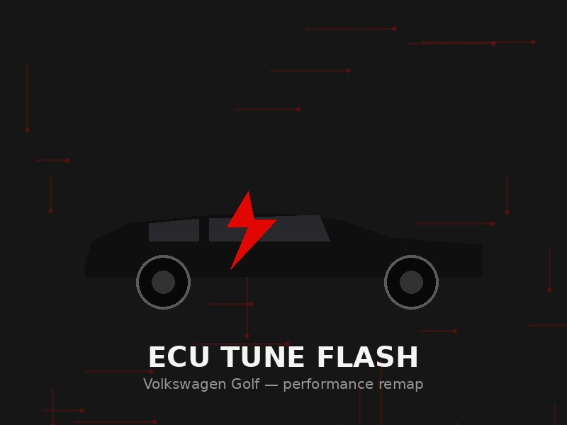
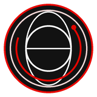
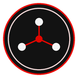
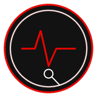
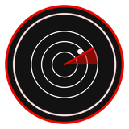

VW Golf ECU Tune Flash
Flashed a performance-tuned ECU map onto a Volkswagen Golf, diagnosing existing fault codes first with iCarsoft before writing the new tune.
Tools: iCarsoft, ECU Flashing/diagnostics Tool

Flashed a performance-tuned ECU map onto a Volkswagen Golf, diagnosing existing fault codes first with iCarsoft before writing the new tune.
Tools: iCarsoft, ECU Flashing/diagnostics Tool

This site — a lean, responsive personal portfolio built with HTML, CSS, and JavaScript, showcasing my education, skills, and projects.
Technologies: HTML, CSS, JavaScript

Designed and configured a complete office network including routing, switching, DHCP, DNS, and network security.
Tools: Cisco Packet Tracer
Performed penetration testing using SQL Injection and CSRF attacks with Burp Suite to better understand web security.
Tools: DVWA, Burp Suite

Hands-on car diagnostics using iCarsoft scan tools to read and clear fault codes, along with minor electrical wiring repairs — combining my passion for cars with practical troubleshooting.
Tools: iCarsoft, Multimeter, Wiring Diagrams

Built a real-time flight tracking station that decodes nearby aircraft ADS-B signals and displays live positions, altitude, and speed on a custom dashboard.
Tools: Arduino, C++, RTL-SDR